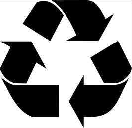
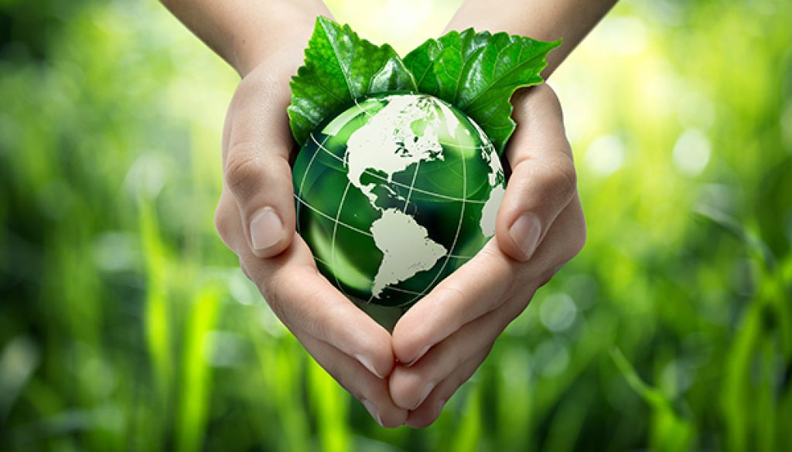

Az újrahasznosítás a gyűjtőneve mindazon tevékenységeknek, amelyek célja, hogy az ember által készített, tartós, nem természetes, főleg hulladékká váló anyagokat nyersanyaggá alakítsa át és olyan másodlagos, újra hasznosítható anyagokat állítson elő, amelyek segítik a természetes anyagok felhasználásának csökkentését. A tevékenységre használt angol szó, a recycling, jobban kifejezi, hogy anyagok környezettudatos körforgásáról van szó, a nyersanyag – késztermék – hulladék – nyersanyag stb. folyamatban. Ezen tevékenységen belül megkülönböztetjük az értéknövelő (upcycling) és az értékcsökkentő (downcycling) fogalmát, melyek az újrahasznosított anyagnak az eredetihez képesti minőségét fejezik ki. Az ehhez kapcsolódó gazdasági tevékenységek sorát körforgásos gazdaságnak is nevezik. Az újrahasznosítás célja a Föld erőforrásainak kímélése, például, hogy kevesebb fát kelljen kivágni papírgyártás céljára, vagy kevesebb vasércet kibányászni acélgyártásra (pl. autógyártáshoz). Emellett fontos cél, hogy a természetbe kerülő hulladék mennyisége is csökkenjen. Az EU-ban körforgásos gazdaságra vonatkozó cselekvési terv készült. A gyártási folyamatokban a környezetbarát és gazdaságos, valóban fenntartható modellre kívánunk átállni. Ebben pedig mindenkinek szerepe van a termékeket tervezőktől az értékesítőkön át egészen a fogyasztókig. A lineáris gazdasági modelltől átkíván jutni a körforgásos gazdaságra.


